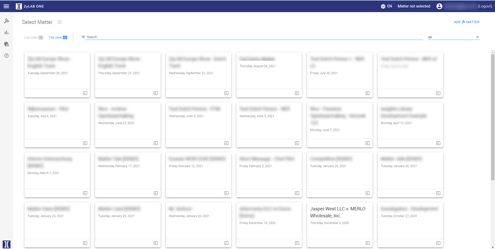

- Or switch to List View before selecting a matter.


- Or select a Matter Type:

After logging into ZyLAB ONE, you will see the Select Matter dashboard.
In the Select Matter dashboard, all ongoing cases are displayed.
You can create a new matter if you want to start a new investigation.
